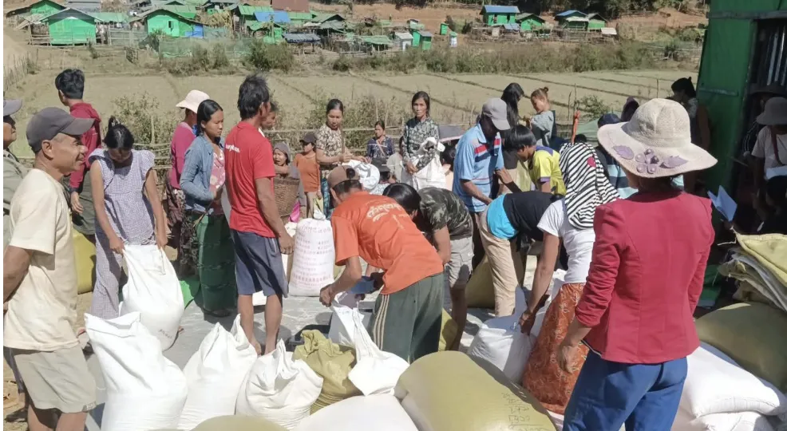
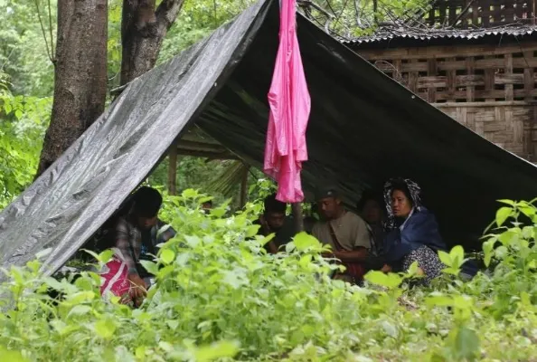
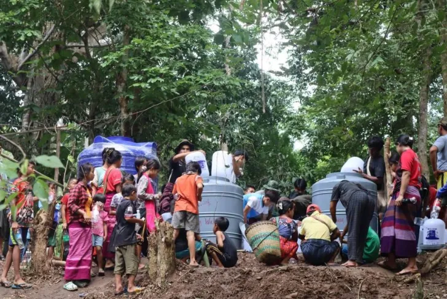
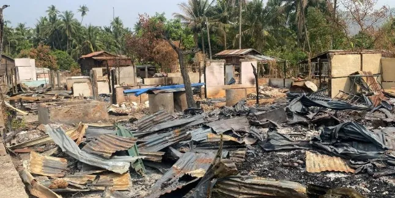

Assessment Overview
From November 3–10, 2024, CTER conducted a critical humanitarian needs assessment across 8 townships in Karenni State: Loikaw, Pekhon, Demoso, Hpruso, Bawlake, Shadaw, Hpa-Saung, and Mese . Surveying 93 respondents across 60 IDP camps, this report identifies the most urgent basic needs of displaced households to guide international prioritization and response.
The findings reflect a prolonged crisis environment where local community coping mechanisms are severely strained, and access to stable survival resources remains heavily restricted by security conditions.
Key Findings at a Glance

Food Security
72% of respondents rank food security as their absolute highest priority. Furthermore, 84% rely entirely on food aid as their primary source of nutrition, yet only 20% receive food assistance on a regular monthly basis.

Shelter & NFIs
88% of displaced populations urgently need Non-Food Items for daily survival. The most critically requested items are heavy-duty tarpaulins (60%), followed by essential medicine (43%) and kitchen utilities (33%).

Water & Sanitation
Access to clean water is a severe challenge, with 45% facing non-functional or dried-up water points and 42% reporting contaminated drinking water. Additionally, 70% of households lack mosquito nets, increasing public health risks.

Protection & Safety
Over 50% of respondents feel unsafe in their current temporary shelters due to the ongoing threat of airstrikes, artillery shelling, and landmines. 80% of the community identified children as the most vulnerable group in this crisis.